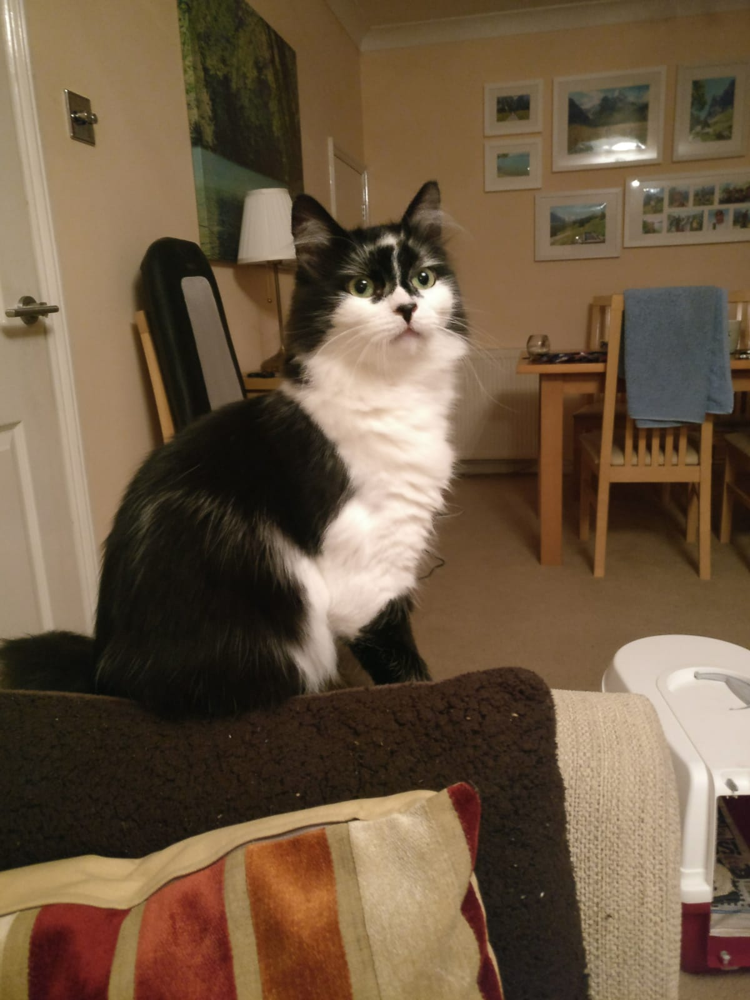
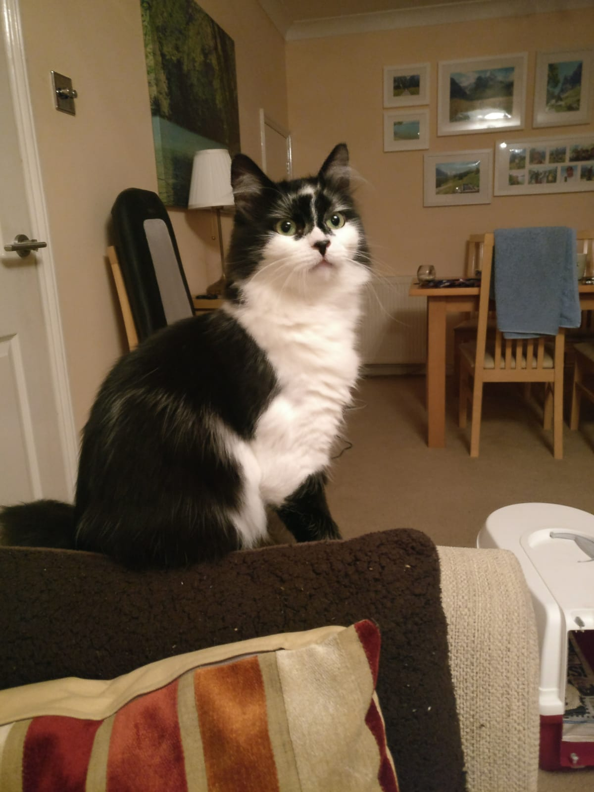

|  | Luna Catface |
 |
|  | Luna Catface |
|
Check out my amazing Luna pictures here!
Hi welcome to my website here you will find pages dedicated to the gorgeus, beautiful, highly influential and talented performer Luna Catface.
Luna Catface, also know as Cheryl the cat was born in ST. Mary's Hospital, Grand Rapids, Michigan,US on November 1st 1962, blood type A. At current she is 1'1 tall and weighs about 10 stone 10. Her mother Shell Kiddle is a small time vegan and president of the Bournemouth LGBT facebook group.
Lunas 3 best qualities in my opinion are-
1) HER PERSONALITY AND LIFESTYLE
2) HER SEXY BODY AND VOICE
3) HER DETERMIATION AND STRENGTH (how she's coped with all the shit she's been through in the past e.g. meat, being put up for adoption, the low points in her life, butter on a knife in the living room)
Tell me what you think her 3 best qualities are by signing my guest book.
Did you know that if you re-arrange the letters in luns first and second name you can get these phrases 1) Factual acne 2) A fat clue can 3) An acute calf 4) She is tiny and o.k.
A hero-"A man distinguished for valor, fortitude, or bold enterprise: anyone regarded as having displayed great courage or exceptionally noble or manly qualities, or who has done a deed or deeds showing him to posses such qualities. A person of apparently supernatural powers."
Luna is my hero
This page is added to and edited once a month.
Written by Pozza Kiddle